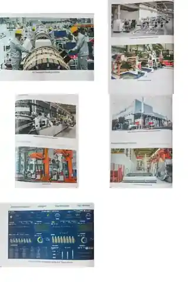
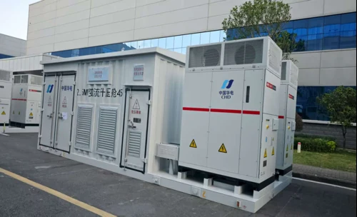
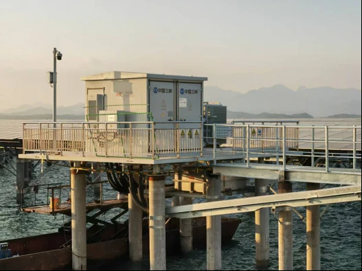
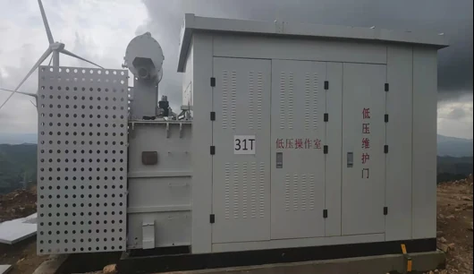
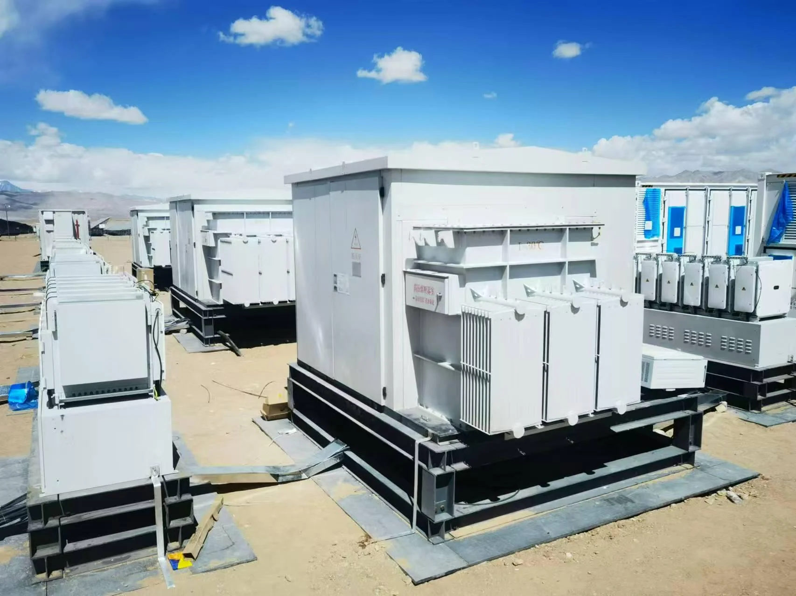
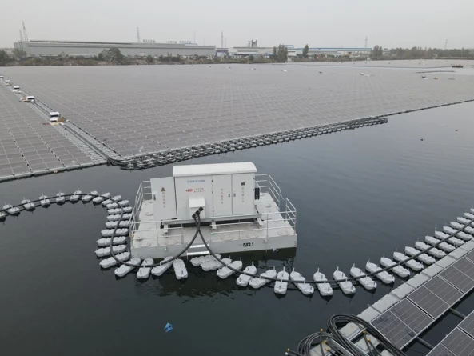
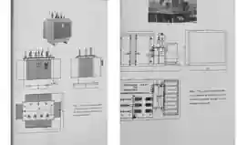
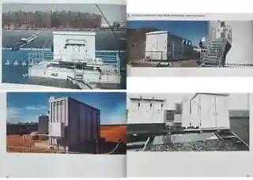

Manufacturing / Testing

TIANYU ELECTRIC
Product Portfolio
Tianyu Electric supplies transformers and prefabricated substations for utility, renewable-energy, industrial and infrastructure applications. The portfolio covers distribution transformers, high-voltage power transformers, cast-resin dry-type transformers, prefabricated substations and pad-mounted transformer solutions.
Product pages present series ratings, tested reference configurations, engineering drawings and project applications together with the technical information required for quotation. Certificates and test reports are presented once in the Quality & Certification section.
Company Overview
Founded in 1996, Fuzhou Tianyu Electric Co., Ltd. manufactures transformers, prefabricated substations, switchgear and primary electrical equipment for utility, renewable-energy, industrial and infrastructure projects. The company operates as a wholly-owned subsidiary of XJ Group Corporation under China Electrical Equipment Group Co., Ltd.
Tianyu combines product engineering, manufacturing, testing and project documentation for medium- and high-voltage applications. The current export portfolio includes energy-efficient distribution transformers, 110–220 kV power-transformer references, SCB18 cast-resin dry-type transformers, 35 kV prefabricated substations and pad-mounted transformer solutions.
Transformer, prefabricated substation, switchgear and primary electrical equipment solutions for utility, renewable, industrial and infrastructure projects.
Wholly-owned subsidiary of XJ Group Corporation under China Electrical Equipment Group Co., Ltd.
A southern manufacturing base for primary electrical equipment of China Electrical Equipment Group Co., Ltd.

Manufacturing & Testing
Transformer manufacturing covers magnetic-core processing, coil winding, insulation preparation, drying, active-part assembly, enclosure integration and final inspection. Process control at each stage supports the required losses, temperature rise, insulation performance, acoustic performance and mechanical strength.
Routine factory tests are completed according to the applicable product specification. Independent type-test reports and third-party certificates are identified separately by model and report number in the relevant product sections.
Manufacturing / Testing

Manufacturing / Testing
Manufacturing / Testing

Manufacturing / Testing
Manufacturing / Testing
Manufacturing / Testing
Third-party type tests and certifications are identified separately from in-house manufacturing and routine-test capability.
Manufacturing Base
Factory capacity and plant data are now separated from third-party product test evidence.
Source boundary: Series capability from the company catalog is presented separately from model-specific third-party test evidence already stored in the website. Values described as catalog series capability are not presented as blanket third-party certification.
Production Equipment
The catalog adds actual equipment photography to replace generic manufacturing imagery.

Large-coil winding for power transformer production.
Servo-controlled high-voltage winding line.
Foil winding for low-voltage and distribution-transformer coils.
Belgium-imported core cutting line for magnetic-core processing.
Automated tank welding equipment for repeatable fabrication.
Automatic vacuum casting equipment for cast-resin dry-type transformer production.
Digital Manufacturing
Production planning, quality traceability, warehouse management and supplier collaboration are presented as separate operational systems.
Test & Inspection
The official catalog lists laboratory ratings for lightning impulse, power-frequency withstand, partial discharge and power analysis.

QUALITY & CERTIFICATION

REFERENCE EVIDENCE
TÜV Certificate of ConformityS-M-1600/22-Tier21600 kVA · 22 / 0.42 kV
REFERENCE EVIDENCE
IEC Complete Type Test ReportS-M-1600/22-Tier21600 kVA · 22 / 0.42 kV
REFERENCE EVIDENCE
Tier 2 Efficiency Test ReportS-M-1600/22-Tier21600 kVA · 22 / 0.42 kV
REFERENCE EVIDENCE
CE / Ecodesign VerificationS-M-1600/22-Tier21600 kVA · 22 / 0.42 kVQUALITY & CERTIFICATION

REFERENCE EVIDENCE
Power Transformer Test ReportSZ22-50000/110-NX150 MVA · 110 kV
REFERENCE EVIDENCE
Power Transformer Test ReportSFZ-150000/132150 MVA · 132 kV
REFERENCE EVIDENCE
Power Transformer Type Test ReportSSZ20-240000/220240 MVA · 220 kV
REFERENCE EVIDENCE
Power Transformer Test ReportSSZ22-240000/220-NX1240 MVA · 220 kVQUALITY & CERTIFICATION

REFERENCE EVIDENCE
Dry-Type Transformer Type Test ReportSCB18-2500/102500 kVA · 10 kV
REFERENCE EVIDENCE
Prefabricated Substation Type Test ReportYB-40.5/1.14-1250012500 kVA · 35 kV
REFERENCE EVIDENCE
GY Series Substation Type Test ReportYB-40.5/1.14-12500 (GY)12500 kVA · 35 kV
REFERENCE EVIDENCE
GY Series Substation Type Test ReportYB-40.5-1000010000 kVA · 35 kVDISTRIBUTION TRANSFORMER
S(B)20 / S(B)22 oil-immersed distribution transformers are engineered for utility, industrial and commercial distribution systems, combining sealed construction, ONAN cooling and low-loss magnetic-core design with project-specific electrical interfaces.


PRODUCT DETAILS
APPLICATION & DESIGN
ELECTRICAL CONFIGURATION
SITE & ACCESSORIES
Reference evidence applies to the stated tested configurations. Other capacities, voltage ratios and project variants require their own technical schedule and applicable verification.
TESTED REFERENCE PARAMETERS
Evidence scope. These values belong to the stated Tianyu reference configurations and do not certify every capacity or voltage in the wider product family.
TESTED MODEL
TESTED MODEL
APPLICATION REFERENCES
The table follows the current export project workbook and keeps each reference with the product family under which it was supplied or recorded.
| Project Reference | Application | Industry | Country | Project Scale |
|---|---|---|---|---|
| Tay Ninh Cement Milling Plant 2 | Industrial | Cement | — | — |
| Neikeng Phase I Transformer Project | Industrial | Industrial | — | — |
| Wanhua Ningbo 450 Substation Grade 1 Efficiency Transformer | Industrial | Chemical | China | — |
| SCC Cement Plant 6000 TPD | Industrial | Cement | — | 6000 TPD |
| Yamama 6000 TPD Clinker Plant Project | Industrial | Cement | — | 6000 TPD |
| Wanhua Chemical Haiyang Phase II & III Distribution Project | Industrial | Chemical | China | — |
TECHNICAL REFERENCE

POWER TRANSFORMER
Three-phase oil-immersed main transformers are engineered for utility substations, renewable-energy interconnection and major industrial power systems, with documented Tianyu references extending from 50 MVA / 110 kV to 240 MVA / 220 kV.


PRODUCT DETAILS
APPLICATION & DESIGN
ELECTRICAL ENGINEERING
MECHANICAL & SITE
Reference evidence applies to the stated tested configurations. Project variants are confirmed separately against the approved technical schedule and applicable verification requirements.
TESTED REFERENCE PARAMETERS
Evidence scope. Values below belong to the stated Tianyu tested configurations. They do not certify every capacity, voltage or project variant in the wider product family.
TESTED MODEL
TESTED MODEL
TESTED MODEL
TESTED MODEL
APPLICATION REFERENCES
The table follows the current export project workbook and keeps each reference with the product family under which it was supplied or recorded.
| Project Reference | Application | Industry | Country | Project Scale |
|---|---|---|---|---|
| BCL Hattar Line 2 7200 TPD Cement Plant | Industrial | Cement | Pakistan | 7200 TPD |
| Atlantic Industrial Park 132 kV Substation | Utility Grid | Industrial Park | Nigeria | 132 kV |
| Long Son Company Cement Grinding Project | Industrial | Cement | Vietnam | — |
| Methanol Dayyer Mobile Substation Export Project | Infrastructure | Chemical | United Arab Emirates | — |
| Feicheng 100 MW-Class Advanced Compressed Air Energy Storage Station Phase II | Energy Storage | Energy Storage | China | 100 MW-class |
| Xi'an Metro Lines 8, 10 and 15 Main Substations | Infrastructure | Rail Transit | China | — |
TECHNICAL REFERENCE

DRY-TYPE TRANSFORMER
SCB18 cast-resin dry-type transformers provide oil-free indoor distribution for commercial buildings, healthcare, charging infrastructure, industrial facilities and public infrastructure, with AN / AF cooling and project-specific enclosure and monitoring options.
PRODUCT DETAILS
APPLICATION & DESIGN
ELECTRICAL CONFIGURATION
INSTALLATION & MONITORING
Reference evidence applies to the stated tested configurations. Project variants are confirmed separately against the approved technical schedule and applicable verification requirements.
TESTED REFERENCE PARAMETERS
Evidence scope. Values below belong to the stated Tianyu tested configurations. They do not certify every capacity, voltage or project variant in the wider product family.
TESTED MODEL
TESTED MODEL
APPLICATION REFERENCES
The table follows the current export project workbook and keeps each reference with the product family under which it was supplied or recorded.
| Project Reference | Application | Industry | Country | Project Scale |
|---|---|---|---|---|
| Yinchuan Charging Infrastructure Phase II Lot 2 | Infrastructure | Charging Infrastructure | China | — |
| Baihong Nylon Texturing Workshop Phase I | Industrial | Industrial | China | — |
| Zhangzhou Hospital | Infrastructure | Healthcare | China | — |
| Anhui Xinyi Photovoltaic Glass Lines BA-D | Industrial | Photovoltaic Manufacturing | China | — |
| Fujian Ruian Electric Power Construction Project | Utility Grid | Power Construction | China | — |
| Zhenjiang Chunen Dry-Type Transformer Framework | Industrial | Industrial | China | — |
PREFABRICATED SUBSTATION
The European-Type platform integrates high-voltage primary equipment, a dry-type transformer and low-voltage distribution equipment in one factory-assembled outdoor enclosure for renewable-energy, storage, urban-distribution and infrastructure projects.




PRODUCT DETAILS
APPLICATION & DESIGN
ELECTRICAL SYSTEM
ENCLOSURE & SITE
Reference evidence applies to the stated tested configurations. Project variants are confirmed separately against the approved technical schedule and applicable verification requirements.
TESTED REFERENCE PARAMETERS
Evidence scope. Values below belong to the stated Tianyu tested configurations. They do not certify every capacity, voltage or project variant in the wider product family.
TESTED MODEL
TESTED MODEL
TESTED MODEL
APPLICATION REFERENCES
The table follows the current export project workbook and keeps each reference with the product family under which it was supplied or recorded.
| Project Reference | Application | Industry | Country | Project Scale |
|---|---|---|---|---|
| CR Power Laohekou 130 MW Wind Power Project | Renewable Energy | Wind | China | 130 MW |
| Shandong Rizhao 200 MW Energy Storage Project | Energy Storage | Energy Storage | China | 200 MW |
| Huaneng Weichang 200 MW Wind Power Project | Renewable Energy | Wind | China | 200 MW |
| Yinchuan Charging Infrastructure Project | Infrastructure | Charging Infrastructure | China | — |
| Three Gorges Jiangsu Taizhou Hailing 100 MW Fishery-Solar Project | Renewable Energy | Solar | China | 100 MW |
| Huaneng Laoting 125 MW Wind Power Project | Renewable Energy | Wind | China | 125 MW |
TECHNICAL REFERENCE

PREFABRICATED SUBSTATION
The Compact / GY platform integrates high-voltage equipment, an oil-immersed transformer and low-voltage distribution in a compact outdoor enclosure for renewable-energy, utility and industrial projects requiring high capacity and reduced field assembly.




PRODUCT DETAILS
APPLICATION & DESIGN
ELECTRICAL SYSTEM
ENCLOSURE & ENVIRONMENT
Reference evidence applies to the stated tested configurations. Project variants are confirmed separately against the approved technical schedule and applicable verification requirements.
TESTED REFERENCE PARAMETERS
Evidence scope. Values below belong to the stated Tianyu tested configurations. They do not certify every capacity, voltage or project variant in the wider product family.
TESTED MODEL
TESTED MODEL
APPLICATION REFERENCES
The table follows the current export project workbook and keeps each reference with the product family under which it was supplied or recorded.
| Project Reference | Application | Industry | Country | Project Scale |
|---|---|---|---|---|
| Yunnan Zhaotong Xiaozhai 350 MW Solar Project | Renewable Energy | Solar | China | 350 MW |
| Three Gorges Dongshan Xingchen 180 MW Offshore Solar Project | Renewable Energy | Offshore Solar | China | 180 MW |
| Sunshare Nambala 100 MW Solar Project | Renewable Energy | Solar | Zambia | 100 MW |
| Shanghai Lingang 500 MW Offshore Solar Project | Renewable Energy | Offshore Solar | China | 500 MW |
| CMOC Mining Area 500 MW Solar Project | Renewable Energy | Mining / Solar | Democratic Republic of the Congo | 500 MW |
| Luneng Ruoqiang 2 GW Solar Power Project | Renewable Energy | Solar | China | 2 GW |
COMBINED TRANSFORMER
The ZGS combined-transformer platform integrates the oil-immersed transformer body, high-voltage load switching and fuse protection in a compact outdoor assembly for renewable-energy collection and distribution applications.




PRODUCT DETAILS
APPLICATION & DESIGN
ELECTRICAL CONFIGURATION
OUTDOOR INSTALLATION
Reference evidence applies to the stated tested configurations. Project variants are confirmed separately against the approved technical schedule and applicable verification requirements.
TESTED REFERENCE PARAMETERS
Evidence scope. Values below belong to the stated Tianyu tested configurations. They do not certify every capacity, voltage or project variant in the wider product family.
TESTED MODEL
| Parameter | Specified | Measured / Result |
|---|---|---|
| No-load current I₀ | 0.36% | 0.23% |
| No-load loss P₀ | 2.000 kW | 1.9823 kW before SC · 1.9692 kW after SC |
| Short-circuit impedance | 7.0% ±10% | 7.30% before · 7.29% after |
| Load loss @75°C | 24.600 kW | 24.1500 kW before · 24.3850 kW after |
| Total loss | 26.600 kW | 26.1323 kW before · 26.3542 kW after |
| Temperature rise | Top oil 50 K · windings 55 K | Top oil 42.4 K · HV 53.9 K · LV 53.2 K |
| Sound power | ≤58 dB(A) | No-load 50 · load 56 · combined 57 dB(A) |
APPLICATION REFERENCES
The table follows the current export project workbook and keeps each reference with the product family under which it was supplied or recorded.
| Project Reference | Application | Industry | Country | Project Scale |
|---|---|---|---|---|
| Pianguan Jinlin 100 MW Solar + Storage Project | Renewable Energy | Solar / Storage | China | 100 MW |
| Qianxi Hongjiadu 150 MW Agriculture-Solar Project | Renewable Energy | Solar | China | 150 MW |
| Shexian 150 MW Solar Power Project | Renewable Energy | Solar | China | 150 MW |
| Qinhuangdao Juxing 200 MW Solar Project | Renewable Energy | Solar | China | 200 MW |
| Xinze Kaiping 150 MW Solar Project | Renewable Energy | Solar | China | 150 MW |
| CHN Energy Zhoushan Putuo Dengbu Island 213 MWp Fishery-Solar Project | Renewable Energy | Solar | China | 213 MWp |
Series Capability
Series capability from the official catalog is shown separately from the existing 110 / 132 / 220 kV tested reference models.
Source boundary: Series capability from the company catalog is presented separately from model-specific third-party test evidence already stored in the website. Values described as catalog series capability are not presented as blanket third-party certification.
8-31.5 MVA
HV 35-38.5 kV · LV 6.3 / 6.6 / 10.5 kV
SZ-8000~31500/35
±3×2.5% · YNd11 / Dyn11
6.3-63 MVA
HV 63 / 66 / 69 kV · LV 6.3 / 6.6 / 10.5 kV
SZ-6300~63000/66
±4×1.25% / ±6×1.25% / ±8×1.25% · YNd11 / Dyn11
6.3-63 MVA
HV 110 / 115 / 121 kV · MV 36 / 37 / 38.5 kV · LV 6.3 / 6.6 / 10.5 / 21 kV
SSZ-6300~63000/110
±4×1.25% / ±6×1.25% / ±8×1.25% · YNyn0d11 · H-M 10.5% · H-L 17.5-19% · M-L 6.5%
31.5-240 MVA
HV 220 / 230 / 242 kV · MV 69 / 115 / 121 kV · LV 6.3 / 6.6 / 10.5 / 21 / 36 / 37 / 38.5 kV
SSZ-31500~240000/220
±4×1.25% / ±6×1.25% / ±8×1.25% · YNyn0d11 · H-M 12-14% · H-L 22-24% · M-L 7-9%
35 / 66 kV Series Data
Published catalog values for standard 35 kV and 66 kV on-load voltage-regulating transformers.
| kVA | P0 kW | Pk kW | I0 % | Z % | L×W×H mm | kg |
|---|---|---|---|---|---|---|
| 8000 | 4.3 | 36.5 | 0.32 | 7.5/8.0 | 4400×3820×3390 | 17300 |
| 10000 | 5.1 | 43.2 | 0.32 | 7.5/8.0 | 4470×3850×3540 | 20100 |
| 12500 | 6.0 | 51.1 | 0.28 | 7.5/8.0 | 4870×4340×3690 | 24100 |
| 16000 | 7.2 | 63.3 | 0.28 | 7.5/8.0 | 5040×4050×3790 | 28300 |
| 20000 | 8.5 | 74.4 | 0.28 | 7.5/8.0 | 5260×4130×3820 | 34430 |
| 25000 | 10.1 | 88.0 | 0.24 | 10.0 | 5560×4370×4040 | 40700 |
| 31500 | 12.0 | 104.4 | 0.24 | 10.0 | 6060×4430×4110 | 45200 |
| kVA | P0 kW | Pk kW | I0 % | Z % | L×W×H mm | kg |
|---|---|---|---|---|---|---|
| 6300 | 4.4 | 30.8 | 0.48 | 9.0 | 5275×3390×3932 | 21270 |
| 8000 | 5.3 | 36.5 | 0.48 | 9.0 | 5375×3510×4027 | 23970 |
| 10000 | 6.2 | 43.0 | 0.45 | 9.0 | 5465×3630×4121 | 26800 |
| 12500 | 7.4 | 51.1 | 0.45 | 9.0 | 5545×3660×4216 | 29870 |
| 16000 | 8.9 | 62.8 | 0.42 | 9.0 | 5695×3880×4341 | 34720 |
| 20000 | 10.6 | 76.1 | 0.42 | 9.0 | 6010×4100×4461 | 39780 |
| 25000 | 12.5 | 90.0 | 0.38 | 9.0 | 6190×4320×4581 | 45890 |
| 31500 | 14.8 | 108.0 | 0.35 | 9.0 | 6330×4460×4725 | 52840 |
| 40000 | 17.7 | 126.9 | 0.35 | 9.0 | 6480×4690×4890 | 61130 |
| 50000 | 20.9 | 150.3 | 0.32 | 10.0-12.0 | 6681×4830×5045 | 69820 |
| 63000 | 24.7 | 178.2 | 0.29 | 10.0-12.0 | 6841×4980×5280 | 80390 |
110 / 220 kV Series Data
Published catalog values for 110 kV and 220 kV standard platforms.
| kVA | P0 kW | Pk kW | I0 % | L×W×H mm |
|---|---|---|---|---|
| 6300 | 5.3 | 40 | 0.61 | 6160×3880×4527 |
| 8000 | 6.3 | 48 | 0.61 | 6380×4000×4612 |
| 10000 | 7.5 | 56 | 0.57 | 6420×4120×4696 |
| 12500 | 8.9 | 67 | 0.57 | 6450×4230×4796 |
| 16000 | 10.6 | 81 | 0.54 | 6520×4280×4896 |
| 20000 | 12.5 | 95 | 0.54 | 6630×4410×4996 |
| 25000 | 14.9 | 113 | 0.50 | 6840×4540×5125 |
| 31500 | 17.7 | 134 | 0.50 | 7070×4690×5255 |
| 40000 | 21.2 | 161 | 0.46 | 7260×4840×5385 |
| 50000 | 25.0 | 192 | 0.46 | 7440×5000×5515 |
| 63000 | 29.8 | 230 | 0.42 | 7640×5150×5659 |
| kVA | P0 kW | Pk kW | I0 % | L×W×H mm | |
|---|---|---|---|---|---|
| 31500 | 19 | 138 | 0.50 | 6460×6700×7260 | 84760 |
| 40000 | 23 | 165 | 0.48 | 6750×6860×7330 | 95510 |
| 50000 | 26 | 194 | 0.48 | 7040×6930×7400 | 106780 |
| 63000 | 31 | 231 | 0.44 | 7360×7100×7470 | 119865 |
| 90000 | 40 | 300 | 0.35 | 7950×7620×7640 | 143260 |
| 120000 | 51 | 369 | 0.35 | 8470×7940×7790 | 165420 |
| 150000 | 59 | 438 | 0.31 | 8980×8050×7325 | 187265 |
| 180000 | 68 | 538 | 0.31 | 9360×8140×7410 | 208910 |
| 240000 | 85 | 667 | 0.28 | 9990×8370×7550 | 248270 |
GA / Outline Drawings
GA drawings become the primary catalog engineering reference; test schematics remain in evidence resources.
 35 / 66 / 110 / 220 kV Power Transformer GA Reference PlateCatalog reference drawing · final project drawing subject to engineering confirmation
35 / 66 / 110 / 220 kV Power Transformer GA Reference PlateCatalog reference drawing · final project drawing subject to engineering confirmation
12 kV Distribution + 40.5 kV Renewable Transformer GA Reference PlateCatalog reference drawing · final project drawing subject to engineering confirmationDistribution & Renewable
The official catalog fills the previous series-data gap while existing Tier 2 evidence remains model-specific.
30-2,500 kVA
HV 6 / 6.3 / 6.6 / 10 / 10.5 / 11 kV · LV 400 / 415 / 420 V
50 / 60 Hz · Dyn11 / Yyn0 / Dyn5
1,000-12,500 kVA
HV 33 / 34.5 / 35 / 37 / 38.5 kV · LV 400 / 690 / 800 / 1,140 V
50 / 60 Hz · Dyn11 / Yyn0 / Dyn5 · Z 6-14%
35 kV and below
Converter-system transformer platform for rectifier duties in industrial production environments.
Dry-Type Platform
SCB18 tested references remain distinct from the wider catalog product platform.
Series platform
Intelligent terminals can monitor operating status, temperature, loss, power consumption, alarms, data storage, communications, fan control and remote transmission.
Up to 8,000 kVA
S(S)CB11-18 platform with large-air-volume cooling for complex working conditions.
Up to 25,000 kVA
SC(Z)11-18 platform; the catalog cites SCZ12-25000/35 project operation in Hangzhou.
Up to 4,000 kVA
SCBH15 / SCBH17 / SCBH19 platform for data centers, communications, semiconductor and industrial fields.
Up to 8,000 kVA
SCB14(18) platform with laser-cut bending-plate structural process.
Prefabricated Substations
Capacity and integration method clarify the differences between compact combined transformers, modular substations and integrated power-conversion stations.

200-4,000 kVA
HV 7.2-40.5 kV · LV 0.315-1.14 kV
Transformer body, HV load switch and fuse are integrated in insulating liquid; suited to ring-network / terminal distribution and renewable projects.
200-8,000 kVA
HV 7.2-40.5 kV · LV 0.315-1.14 kV
Modular enclosure integrating transformer, HV switchgear, LV switchgear, metering, compensation and auxiliary systems.
200-12,500 kVA
HV 7.2-40.5 kV · LV 0.315-1.14 kV
Designed for photovoltaic and wind-power generation with separated high-voltage switching and transformer-oil sections.
2,000-9,000 kVA
HV 7.2-40.5 kV · LV 0.315-1.14 kV
Factory-integrated PV / BESS power-conversion solution for remote sites, short construction periods and difficult site conditions.
Renewable & Special Solutions
Special product pages from the Tianyu catalog are retained as application-led solutions rather than forced into generic transformer categories.
Catalog describes axial split construction, two independent power supplies, winding temperature rise around 55 K, partial discharge below 50 pC and C5-M anti-corrosion for the referenced design.
Vehicle-mounted / towable factory-prefabricated system for temporary power supply and emergency restoration.
Deep/open-sea wind application with compact structure, plug-in HV bushing and natural-ester insulating liquid.
Factory-integrated inverter / PCS, transformer and medium-voltage switchgear package.
Engineering & Customization
Transformer products are configurable, but customization is not unlimited substitution. A tested platform gives engineering a known starting point, while the final design is adjusted to the electrical system, load, environment, standards and interfaces of the project. Some changes, such as accessories or monitoring, may be relatively local; others, such as voltage, impedance, core design, harmonic duty, insulation level or loss target, can affect the fundamental design and the relevance of existing test evidence.
For this reason Tianyu reviews the project specification before freezing the technical schedule. The objective is to identify which requirements can remain within an established platform, which require a new engineered configuration and which may require additional verification for the destination market or the customer's own technical specification.
Changes that affect rated performance, losses, insulation, winding arrangement, magnetic design or applicable market requirements must be reviewed for their impact on testing and compliance.
RFQ Guide
A transformer quotation becomes more accurate as soon as the electrical duty and site conditions are defined. Capacity and voltage alone are rarely sufficient for a final technical offer. Frequency, vector group, impedance, tapping, insulation levels, loss requirements, ambient temperature, altitude, installation method, accessories and the governing standard can all change the design and price.
When available, a single-line diagram, tender specification, load profile, harmonic information and cable-interface drawing should be supplied with the inquiry. These documents allow engineering to compare the requirement against an existing platform and reduce avoidable revisions later in the project.
Project Support
Product-family and reference-model matching against project ratings.
Technical schedules, drawings and available test evidence organized for project review.
Production and routine-test documentation prepared for the agreed order scope.
Packing and technical document handover aligned to the project delivery plan.